| 4˚ 40’ | 4˚ 42’ | |
| Paralaks | 02’ |
Burada Kutupyıldızı yüksekliklerinin farkı 4˚ 40’lık’dır ve bu ´’ın 4˚ 42’lık yükseklik farkından azdır. Bundan ötürü sıfır derece 2’lık paralaks farkı söz konusudur. Bu sayıları bulduktan sonra yazarın sunduğu şekli aktarıyorum. Bu şekilde B noktası Landgravio’nun verdiğidir, D noktasıysa Tycho’nun verdiğidir; C noktası da ´ yeridir. A ise Yerküre’nin merkezi. Şimdi aşağıya şekli veriyorum.
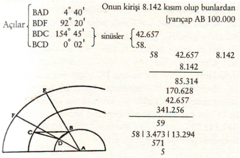
Şekil 18- Tanınmış birkaç astronomun paralaks bulguları. A Yerküre merkezi, B Langravio’nun rasat yaptığı yer, D Tycho’nun gözlem yeri. C yeni yıldızın yeri, BCD açısı paralaks farkı.
ABE Landgravio’nun dikey doğrusu, ADF Tycho’nun dikey doğrusu ve BCD açısı paralaks farkı. Ve dikey çizgiler arasındaki BAD açısı kutup yüksekliklerinin farkına eşit olduğundan 4˚ 40’ olacaktır ve bunu ayrıca not ediyorum. Bunun kirişini yay ve kirişler cetvelinden buluyorum ve 8.142 olarak kaydediyorum. Bu 8.142 kısmın yarıçapı AB 100.000. Daha sonra BDC açısını kolaylıkla buluyorum: BAD açısının yarısı 2˚ 20’dır, bunu bir doğru ile birleştirince BDF 92˚ 20’ açısını verir. Buna CDF açısını birleştiriyorum, çünkü yıldızın en yüksekteki tepe noktasından olan mesafedir, ki burada 62˚ 15’dır, bize BDC açısının 154˚ 45’ olan miktarını ortaya koyar. Bunu cetvelden aldığım sinüsüyle birlikte kaydediyorum, ki bu 42.657’dir ve bunun altına 0˚ 2’ olan BCD paralaksının açısını 58 olan sinüsüyle birlikte kaydediyorum. BCD üçgenin de DB kenarının BC’ye oranı karşısındaki BCD açısı sinüsünün onun karşısındaki BDC açısı sinüsüne oranı gibi olduğundan demek oluyor ki BD 58 olduğu takdirde BC 42.657 olacaktır ve DB kirişi 8.142 olduğundan ve bunun yarıçapı BA 100.000 olduğundan ve biz de bunların kaç parçasının BC olduğunu araştırdığımıza göre geçerli kural gereğince şöyle diyeceğiz: Eğer BD 58 iken BC 42.657 ise aynı DB 8.142 olduğunda BC kaç olurdu? İkinciyle üçüncüyü çarpınca 347.313.294 elde ediyorum ki bu sayı birinciye bölünmeli, yani 58’e bölmem gerekir ve bölmeden elde edilen sayı yarıçapı 100.000 olan BC çizgisi parçalarının sayısı olur ve aynı BC çizgisi kaç adet BA yarıçapı ihtiva ediyor diye öğrenmek istiyorsak bölmeden elde ettiğimiz sayıyı 1.000.000 sayısına bölmek gerekir ve böylece BC’nin kaç adet yarıçap içerdiğini bulmuş oluruz. Şimdi 347.313.294 sayısını 58’e bölersek 5.988.160 1/4 elde ederiz, aşağıdaki işlemde görüldüğü gibi:
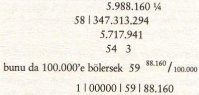
Fakat biz işlemi kısaltabiliriz bulduğumuz ilk sayı olan 347.313.294’ü 58’in 100.000’e çarpımıyla elde ettiğimiz sayıya bölersek. Şöyle ki:
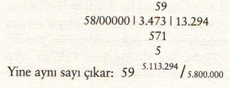
Ve bu sayı kadar yarıçap vardır BC çizgisi içinde, bunlara bir tane de AB hattı için ekleyince iki ABC hattı için 61 yarıçaptan az fazla bir şey çıkar ve bu nedenle de A merkezinden C yıldızına düz mesafe 60 yarıçaptan fazla demektir; böylece Ay-ötesi bir mesafe olduğu anlaşılıyor. Batlamyus’a göre 27 yarıçaptan fazla ve Copernicus için 8 yarıçaptan fazladır, çünkü yazarın ifadesine göre Copernicus’un hesaplarına göre Ay’ın Yerküre’nin merkezinden uzaklığı 52 yarıçaptır. Bu benzer incelemeyle Camerario ile Munosio’nun[124] gözlemlerinden yıldızı aynı uzaklıkta buluyorum yani 60 yarıçaptan fazla bir uzaklıkta. İşte gözlemler ve işte yanlarında hesaplamalar:
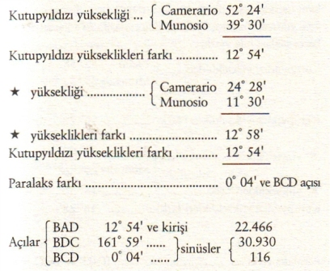
Temel Kural
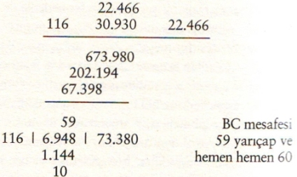
Aşağıdaki inceleme Tycho’nun ve Munosio’nun iki gözlemi üstüne yapılmıştır; bunlara dayalı hesaplamalara göre yeni yıldızın Yerküre merkezinden uzaklığı 478 yarıçaptır ve hatta fazlası bile vardır.
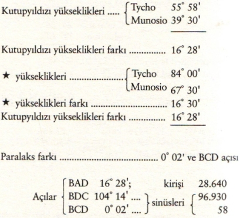
Temel Kural
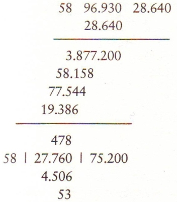
Şimdi izleyen inceleme, yıldızın uzaklığını merkezden 358 yarıçap olarak veriyor.
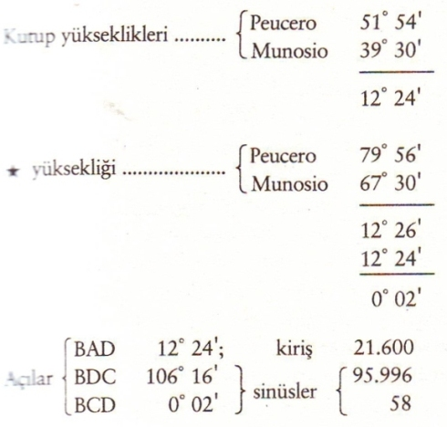
Temel Kural
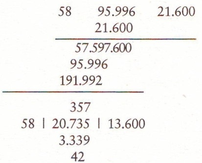
Bu incelemeden de anlaşılıyor ki yıldız merkezden 716 yarıçap uzak bulunuyor.
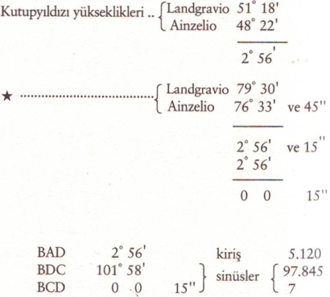
Temel Kural
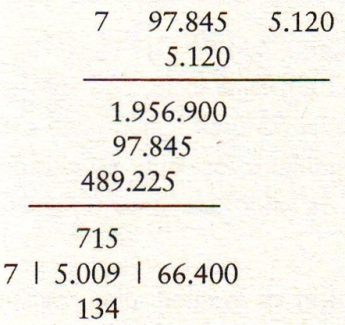
Bunlar, gördüğünüz gibi yıldızı Ay’ın çok yükseğinde bulan incelemelerdir: Burada daha önce belirttiğim bir özelliğe dikkatinizi çekmek isterim. O da şu: Büyük uzaklıklarda birkaç dakikalık hata yıldıza büyük mesafeler atlatır, yıldızın yerini değiştirir. Örneğin bu incelemelerin ilkinde olduğu gibi; buradaki hesaplama yıldızı merkezden 60 yarıçap uzağa konduruyor, 2 dakikalık paralaks vardı. Eğer yıldızın gökyüzünün engin yüksekliklerinde olmasını istiyorsanız gözlemlerde yalnızca 2 dakikalık bir düzeltme yaptığınızda ve hatta 2 dakikadan da az, o takdirde paralaks yok olur ya da o denli az bir paralaks olur ki yıldızı müthiş uzaklara atar; bu da göğün enginlikleridir. İkinci incelemede 4 dakikalık bir değişiklik aynı sonucu doğurur, üçüncüde ve dördüncüde, tıpkı birincide olduğu gibi yalnızca iki dakika bile yeni yıldızı sabit yıldızların ötesine kondurmaya yeter. Bir öncekindeyse yalnızca 15 saniye aynı sonuç için yetelidir. Fakat Ay-berisi yüksekliklerde durum böyle değildir: Nitekim hangi yüksekliği arzu ettiğinizi zihninizde belirleyin ve yazar tarafından yapılan incelemeleri, değişiklikler hep aynı yüksekliği versin diye düzeltin, göreceksiniz ki çok daha büyük değişiklikler yapmak gerekecektir.
Sagredo – Sizin bu dediklerinize örnek olarak bir şeyler verseniz de daha iyi anlasak olmaz mı?
Salviati – Siz kendiniz Ay-berisi bir yüksekliğe yeni yıldızı kondurmak için bir mesafe seçin; yeni yıldıza sabit yıldızlar arasında yer kazandırmak için yapılan değişikliklerin Ay-berisinde saptadığınız mesafeye kondurmaya yeterli olup olmadığını fazla vakit harcamadan hemencecik görebileceksiniz.
Sagredo – Yazar için en avantajlı olan mesafeyi almak için onun 12 adet incelemesi arasında farkın en büyük olduğu incelemeye bakalım. Onlar yeni yıldızı Ay-ötesi yüksekliklerde bulurken yazarın Ay-berisi dediği incelemelerden en belirginini ele alalım.
Salviati – Öyleyse yedinci incelemeyi ele alalım, Tycho ile Agecio’nun[125] gözlemlerine konu olan incelemeyi. Burada yazar, yeni yıldızın Yerküre merkezinden uzaklığını 32 yarıçap olarak olarak buluyor ki bu uzaklık yazar için avantajlıdır. Yazara avantajını koruması için astronomlar açısından en olmayacak uzaklığı tanıyalım ki bu uzaklık da sabit yıldızların ötesine yerleştirmektir. Bunu böylece kabul ettikten sonra diğer 11 incelemesi için ne gibi düzeltmeler gerektiğine bakalım, yıldızı 32 yarıçaplık uzaklığa kondurabilmek için ve birinciden başlayalım, Ainzelio[126] ile Maurolico[127] gözlemlerine dayalı olandan. Bu incelemede yazar merkezden uzaklığı 3 yarıçap olarak buluyor ve paralaksı da 4˚ 42’ ve 30’’ olarak saptıyor: Bakalım bunu 20 dakikaya indirirsek yıldızı 32 yarıçapa eşit mesafeye çıkarabilir miyiz? İşte size çok kısa ve doğru işlem: BDC açısının sinüsünü BD kirişiyle çarpıyorum ve son beş sayıyı çıkararak paralaksın sinüsünü buluyorum, ortaya çıkan sayı 28,5 yarıçaptır: Böylece 4˚ 42’ ve 390 saniyeden 4˚ 42’ ve 30’’ çıkarmamız bile yıldızı 32 yarıçaplık uzaklığa ulaştırmaya yetmiyor; Bay Simplicio’nun anlaması için tashihin 262’lık olduğunu söyleyelim.
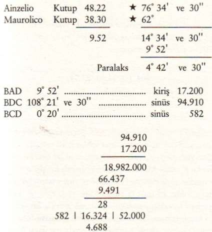
Ainzelio ve Sculero tarafından yapılan gözlemlere ikinci işlemde 0˚ 8’ ve 30’’lik paralaksla yıldız 25 yarıçaplık yükseklikte bulunuyor, işlemde görüldüğü gibi:
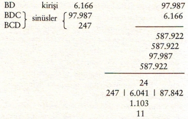
Ve 0˚ 08’lık paralaksı, sinüsü 204 olan 07’ya indirince yıldız yaklaşık 30 yarıçap yüksekliğe çıkıyor: Demek ki l’ ve 30’’lik düzeltme yetmiyor.
29
204 | 6.041 | 87.842
1.965
12
Şimdi Ainzelio ve Tycho’nun gözlemlerine dayanan ve yıldızı 19 dakikalık paralaksla yaklaşık 10 yarıçap yüksekliğine yerleştiren üçüncü incelemeye nasıl bir düzeltme gerekli onu görelim. Malum açılar ve sinüslerle kirişlerin yazar tarafından şöyle dökümü yapılıyor ve yine yazarın işlemi uyarınca yıldız 19 yarıçap yüksekliğine yerleştiriliyor. Yükseğe yerleştirmek için paralaksı küçültmek gerekir. Bu düzeltmeyi kendisinin de dokuzuncu incelemede başvurduğu gibi o kurala uygun olarak yapmalı: Bu arada paralaksı 6’ olarak koyalım, sinüsü de 175’tir ve bölmeyi yaptıktan sonra yine de 31 yarıçaptan küçük yarıçap sayısı bulunuyor yıldızın yüksekliği için. Demek ki 4’lık düzeltme yazarın ihtiyacına yetmiyor.
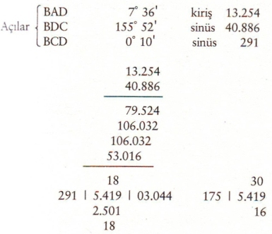
Şimdi dördüncü ve geri kalan incelemelere yazarın kendisinin bulduğu kirişler ve sinüslerle aynı kuralı uygulayarak başlayalım. Burada paralaks 14’dır ve bulunan yükseklik ancak 10 yarıçap kadardır ve paralaksı 14’dan 4’ya indirince bile yeni yıldız, gördüğünüz gibi 31 yarıçapa kadar yükselemiyor: Demek ki 14’lık paralaksta 10’lık bir düzeltme bile yetmiyor.
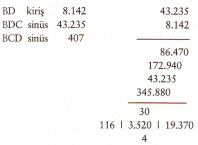
Yazarın beşinci işleminde gördüğünüz gibi sinüsler ve kirişler şöyle:
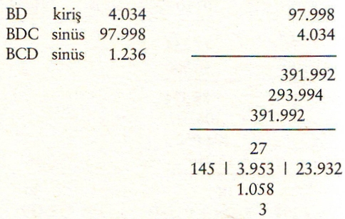
Paralaks 0˚ 42’ ve 30’’dir bu da yıldızı 4 yarıçap yüksekliğine kondurmaktadır ve paralaksı düzeltip 5’ya indirirsek 28 yarıçap yüksekliğe çıkarmaya bile yetmez; demek ki 42’ ve 30’’den 5’ya indirmek de yetmiyor. Bu durumda 37’ ve 30’’lik düzeltme yetmez, azdır.
Altıncı işlemde kiriş, sinüsler ve paralaks şöyledirler:
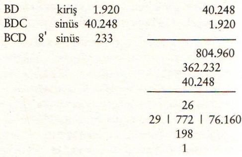
Ve yıldız yaklaşık 4 yarıçap kadar yüksekliktedir: Bakalım 8’lık paralaks yalnızca bir dakikaya indirilince yıldız acaba nerede olacak? İşlemde göreceksiniz, yıldız 27 yarıçap yüksekliğine bile çıkarılmış olamayacak. Demek ki 8’nın 7’sini düzeltmek bile yetmiyor.
Sekizinci işlemde kiriş, sinüsler ve paralaks gördüğünüz gibi şöyledir:
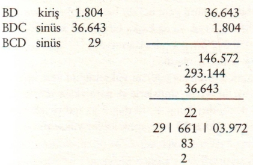
Buradan da yazar yıldızın yüksekliğini 1 ve buçuk yarıçap olarak hesaplıyor, paralaks da 43’ olduğu halde, bu 1’ya indirilirse yıldıza yine de 24 yarıçaptan az veriyor: Demek ki 42’lık düzeltme yetmiyor.
Şimdi dokuzuncuya geldi sıra. İşte kiriş, sinüsler ve paralaks 15’dır: Bundan ötürü yazar yıldızın uzaklığının Yerküre’nin yüzeyinden itibaren yarıçapın kırk yedide biri olduğunu hesaplıyor. Bu bir hesap yanlışlığından kaynaklanıyor; çünkü, şimdi göreceğimiz üzere, gerçekten beşte biri kadar çıkıyor hesap: İşte 90 / 436 oluyor ki bu da beşte birden fazladır.
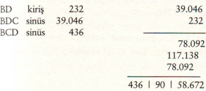
Daha sonra yazar, gözlemlerin düzeltilmesiyle ilgili olarak paralaks farkını ne bir dakikaya ne de dakikanın sekizde birine indirmek yeterli değildir diyor ki bu doğru. Ama ben de diyorum ki 1’nın onda biri bile yıldızın yüksekliğini 32 yarıçapa indirmeye yetmeyecektir: Şöyle ki bir dakikanın onda birinin sinüsü yani 6.3’dir biz bunu kendi kuralımıza göre 90’a bölersek ya da başka bir deyişle 300.000’e bölersek 9.058.672’den gelecek olan sayı 30, 58.672 / 100.000 yani 30 yarıçap ve buçuk olacak.
Onuncu inceleme yıldızın yüksekliğini yarıçapın yarısı olarak bu açıyla, sinüslerle ve paralaksla veriyor ki derecesi 4˚ 30’dır: Bunu 4˚ 30’dan 2’ya indirirsek nasıl olsa yine de yıldızı 29 yarıçaplık kadar yükseltmiyor.
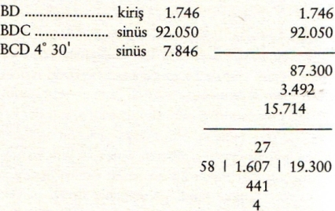
On birinci inceleme yazara yıldızın yerini 13 yarıçap kadar uzaklıkta veriyor, paralaks da 55’lık: Bakalım 20’ya indirmekle yıldız nereye yükselmiş olacak? İşte hesaplaması: 33 yarıçaptan azıcık yukarıya çıkarıyor. Düzeltme demek 35, biraz daha az, 55 üzerinden 35’e düzeltme söz konusu.
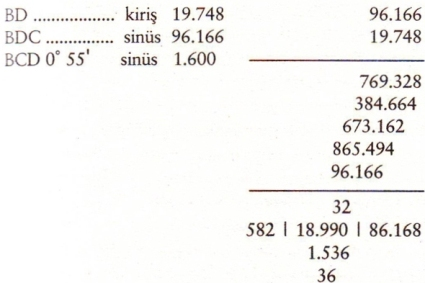
On ikinci inceleme 1˚ 36’lık paralaksla yıldızı 6 yarıçaptan daha düşük bir yüksekliğe konduruyor: Paralaksı 20’ya çekerek yıldızı 30 yarıçaptan az bir uzaklığa konduruyor. Demek ki 1˚ 16’’lık bir düzeltme yetmez.
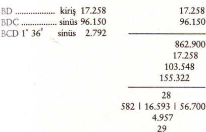
Yazarın yıldız yüksekliğini 32 yarıçap mesafesine indirmek için on incelemede yaptığı paralaks düzeltmeleri şöyle:
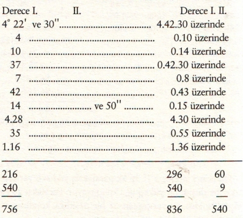
Burada görülüyor ki yeni yıldızı ´ (süpernova) 32 yarıçap yüksekliğine düşürmek için paralakslar toplamı 836’dan 756’yı çıkarmak ve 80’e indirmek gerekir ve bu düzeltme de yetmez.
Bundan da anlaşılıyor ki (daha önce belirttiğim gibi) yeni yıldızın gerçek yerini yazar 32 yarıçaplık mesafe olarak saptamak istiyorsa diğer on incelemesinin düzeltmeleri bu yıldızı o mesafeye geri getirebilmeleri için öyle bir paralaks indirimi gerekir ki tümünün çıkarma işlemindeki tutarı 756 dakikadan fazla olmalıdır (on incelemeden söz ettim çünkü iki numaralı inceleme epey yükseği gösterdiğinden 2 dakikalık bir düzeltmeyle 32 yarıçaplık mesafeye indirgenebilir). Hesaplarım benim yaptığım beş incelemede, ki bunlar yıldızı Ay’ın ötesindeki yüksekliklerde gösteriyorlar, bunlardaki düzeltmelerin yeni yıldızı sabit yıldızların bile ötesinde göstermesi için 10 ve bir çeyrek dakikalık düzeltme yeterlidir. Şimdi, bunlara, hiçbir düzeltmeye gerek kalmadan yıldızı sabit yıldızlar kubbesinde gösteren beş inceleme daha ekleyiniz. Böylece on inceleme yeni yıldızı sabit yıldızlar küresinde göstermekte mutabakat içindeler: Bunlardan yani bu 10 taneden yalnızca beşi az önce söylediğimiz gibi 10 dakika ve bir çeyrek dakikalık düzeltmeye ihtiyaç gösteriyor. Buna karşılık diğer 10 tanenin, yazarın istediği gibi 32 yarıçaplık mesafeye indirilebilmesi için 836 dakika üzerinde 756 dakikalık düzeltme gerekiyor, başka bir deyişle 836 toplamından 756 dakika çıkarılmalı ki yıldız 32 yarıçaplık mesafeye kavuşsun ve bu düzeltme bile pek yetmiyor ve düzeltmeye falan ihtiyaç göstermeksizin yeni yıldızı paralakstan yoksun kılan incelemeler var ki bunlar yıldızı sabit yıldızlar kubbesinde ve onun da en ücra köşe bucağında gösteriyor; kısacası Kutupyıldızı kadar yükseğe yerleştiriyorlar yeni yıldızı. Bu beş inceleme de şunlar:
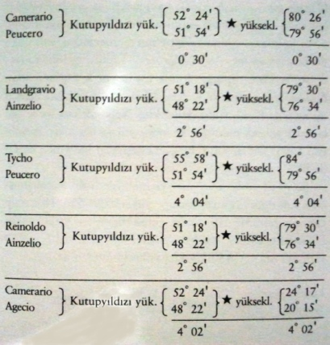
Tüm bu astronomların gözlemlerinden oluşturulacak eleştirilere dayanarak yıldızı göğün engin yüksekliklerinde kabul edenlerin sayısı, onu Ay yüksekliğinin altında kabul edenlerden daha çoktur yani 30 tane daha fazla. Ve hata yapan gözlemcilerin çok değil de az hata yaptıklarını kabul ettiğimiz konusunda anlaştığımızdan, yıldızı sonsuz derecede yüksek kabul eden gözlemlere uygulanacak düzeltmeler, aşağı çekme girişiminde ufacık miktarlarda yapılarak, onu Ay-berisine değil Ay-ötesi yüksekliklere çekecektir: Böylece tüm gözlemler yeni yıldızı sabit yıldızlar yüksekliğinde kabul edenlere hak veriyor. Bu duruma bir de şunu eklemelisiniz: Bu gibi değişikliklere gitmek üzere aranan düzeltmeler, yazarın arzuladığı en uygun yüksekliğe, inanılmaz alçaklıktan çıkarmak için yapılması gereken düzeltmelere kıyasla, daha önce verdiğimiz örneklerden de anlaşılacağı gibi, devede kulak kabilindendir. Sözünü ettiğim imkânsız ve inanılması zor alçak düzeyler arasında 3 tanesi var ki bunlar yıldızı Yerküre’nin merkezinden, yarımdan da az yarıçap mesafesi kadar uzak kabul ettiğinden neredeyse Yerküre toprağı altında tur atıyor kabul ediyorlar. Bunlar öyle garip eşleşmelere dayanıyor ki gözlemcilerden birine göre Kutupyıldızı yüksekliği diğer gözlemciye kıyasla daha yüksek olduğundan yıldız yüksekliği o kişi için diğeri için olandan azdır. Bu gibi eşleşmeler hakkında aşağıda fikir vereceğim.
Şu ilki Landgravio’nun; Gemma ile birlikte çalışmışlar: Landgravio’nun kutup yüksekliği 51˚ 18’ olup Gemma’nın 50˚ 50’ olan yüksekliğinden fazla; fakat Landgravio’nun yıldız yüksekliği 79˚ 30’ olup Gemma’nın 79˚ 45’lık yıldız yüksekliğinden az.